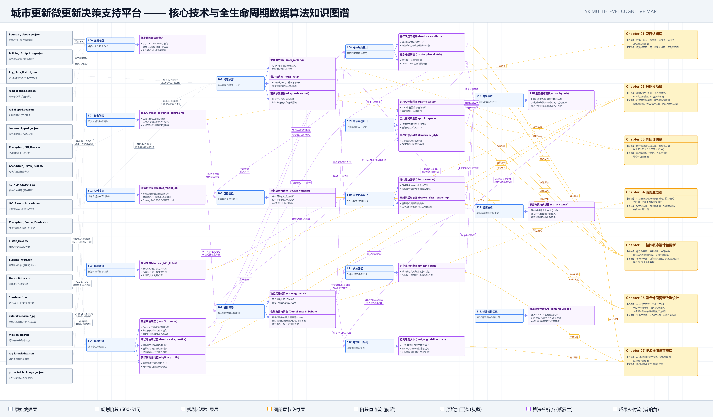

01
老水产市场
文创街区 / 市集更新 / 口袋公共空间


TECHNICAL INNOVATION / AI PLANNING WORKFLOW
以多源空间数据、AHP-MPI 可解释诊断、LLM 多主体协商、Zoning RAG 合规审计、GIS-ControlNet 控形生成和自动化成果生产线，解决城市更新中的诊断粗糙、博弈断裂与制图漂移问题。



MASTER PLAN ATLAS / CITY SCALE
以总体鸟瞰、更新模式、空间结构和专项系统为核心，组织城市更新图册的主干成果。


以“依据—原则—目标—定位—策略”串联设计决策，再衔接下方总体规划专项图纸，形成完整图册叙事。


KEY PARCEL DESIGN / FIVE SITES
用现状卫星、改造总平、策划流线、鸟瞰效果与控制指标建立可比较的地块更新样本。


文创街区 / 市集更新 / 口袋公共空间
活态市集 / 风味院落 / 慢行街巷


全龄社区 / 公共服务 / 校园边界缝合


肌理延续 / 商业复合 / 近人尺度界面


能源记忆 / 开放绿地 / 低强度更新


KEY PARCEL DESIGN / DETAILED RENDERINGS
五个重点片区更新改造总平面图与主鸟瞰效果图、改造前后对比及AIGC设计推演过程展示。


POLICY & ECONOMIC STRATEGY / IMPLEMENTATION LOOP
以政府规则供给、市场运营增值和居民收益反馈构建街区更新的长期自我造血机制。